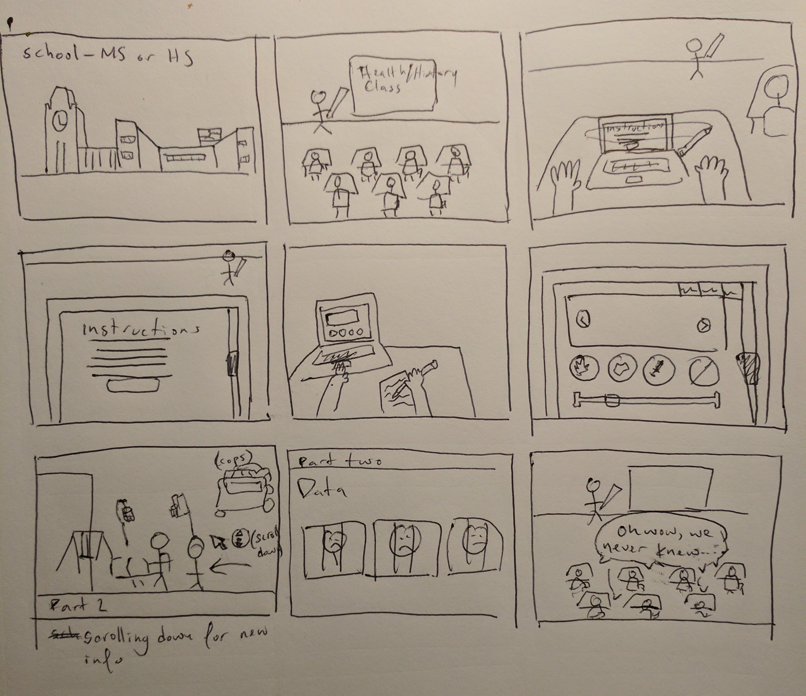
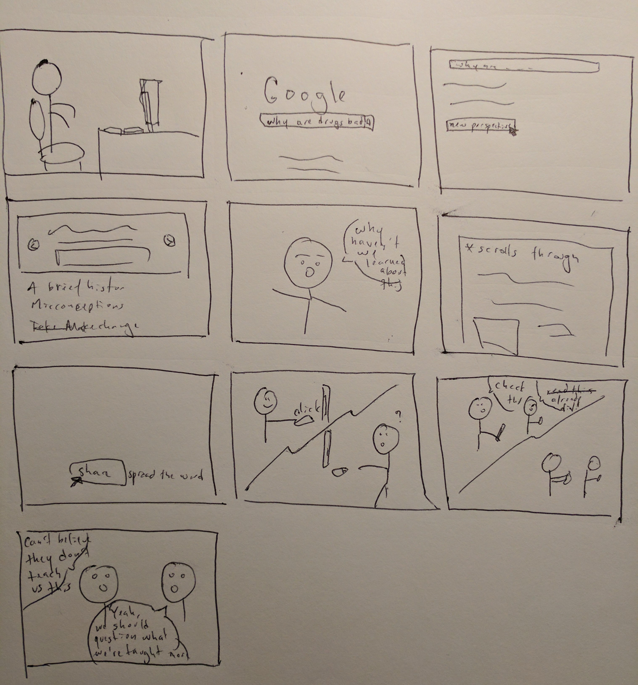

This scenario is an ideal situation where schools are responsible for educating students to understand the history of drug policy in the United States. This storyboard illustrates a scenario where students are learning about drugs in the classroom in Health or History class. This school setting establishes an environment for students to take notes and learn from the project. Students will received a new perspective separate from the message that our society often associates with drugs because the project aims to be informative about different perspectives. Being in the classroom will educate this particular audience to understand that our current society’s perspective on drugs was a message rooted in violence and social injustice.
In this second scenario, individuals who are curious will stumble upon “Public Enemy Number 1” on their own. When opening the link and learning about the information, I hope to get the audience to question why we are not taught in school about the severity of the drug war in the US. Additionally, they will learn how to use drugs safely. The goal is that through education and safe practices, our society will learn how to actually prevent drug abuse by understanding how exactly drugs affect our bodies. This enlightenment, as illustrated in this storyboard, should urge interested individuals to share the story with their network. This way, knowledge that we often do not learn in school will organically spread across social platforms - ultimately reaching more and more people.